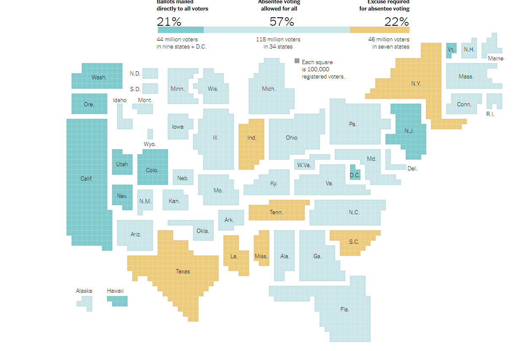

<section class="data-viz" id="data">
    
    <p class="data-viz__text-desc">The above visualization is of where americans can vote by mail in the 2020 election from the New York Times. As the nature of the data collected is qualitative, the choice of hues denoting different regulations for voting is done well. The saturation of these hues are also in the lower side which makes it more readable. The feature I liked the most is how the size of the states are represented by the seats in the house of representatives and not the actual geographical size. This makes us understand which regualtion has more impact on the overall election. They have also made sure that the states are positioned relatively similar to thier actual geographical location. This avoids the readers from being disoriented, and also enables to have shorthand labels of the state names making the visualization more legible.
        <br>
        <b>Credits:</b>
        <a href="https://www.nytimes.com/interactive/2020/08/11/us/politics/vote-by-mail-us-states.html">The New York Times</a>
    
</section>